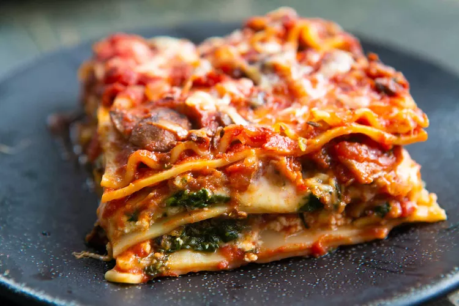

LASAGNA

Vegetarian Spinach and Mushroom Lasagna
This vegetarian lasagna recipe is made with meaty shiitake and crimini mushrooms, spinach,
and ricotta and mozzarella cheeses. It feeds a crowd and will satisfy both vegetarian and
meat-eaters!
Ingredients:
For the sauce
- 1 1/2 pounds cremini mushrooms, roughly chopped
- 2 pound shiitake mushrooms, roughly chopped
- 1/4 teaspoon kosher salt
- 1 generous cup chopped onions
- 1/4 cup extra virgin olive oil, plus more for oiling the noodles
- 4 cloves garlic, chopped (about 4 teaspoons)
- 1 (6-ounce) can tomato paste
- 2 cups prepared tomato sauce, divided
- 1 (28-ounce) can crushed tomatoes
- 1 cup water
- 1 tablespoon dried thyme
- 1/2 teaspoon red pepper flakes
- 1 tablespoon sugar
For the lasagna
- 2 (10-ounce) boxes frozen chopped spinach, thawed and squeezed in clean towel for excess moisture
- 1 pound lasagna noodles (16 to 20 noodles)
- 1 (15 or 16-ounce) container ricotta cheese
- 1/4 cup chopped fresh basil
- 1/4 pound shredded pecorino or Parmesan cheese (about 1 cup)
- 1 pound shredded mozzarella cheese (about 4 cups)
Method
- Sauté the mushrooms:
- Make the sauce:
- Preheat the oven and prep the pan:
- Boil and drain the lasagna noodles:
- Assemble the lasagna:
- Repeat the layers:
- Cover with foil and bake:
- ENJOY!